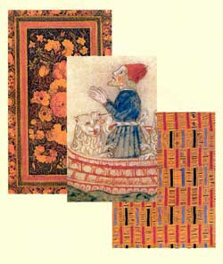

Notice: All Library of Congress research centers are closed to the public (including researchers and others with reader identification cards) until further notice to reduce the risk of transmitting COVID-19 coronavirus. All Library-sponsored public programs are also postponed or cancelled until further notice. Online resources and reference services, such as Ask a Librarian, will continue to be available during this time. For more information, see: www.loc.gov/coronavirus.
|
About
the Division
About the Collections: Search our Databases: Of Interest: Egypt 2008 Web Archive North Africa & Jasmine Revolution - |
 Of Special Interest:African Section: Africana Historic Postcard Collection Conversations with African Poets and Writers Series Digital Collection: Islamic Manuscripts from Mali Obama Memorabilia from
Africa Hebraic Section: Checklists of Items from Past Displays Illustrated Children's Books Sixteenth-Century Hebrew Books at the Library of Congres Words Like Sapphires: 100 Years of Hebraica at the Library of Congress, 1912–2012 Yizkor-Memorial Book Collection: A New and Expanded Finding Aid Near East Section: Abdul-Hamid II Digital Collection of Books and Serials Gifted to the Library of Congress Eltaher Collection - Palestinian Pamphlets The Holy Koran in the Library of Congress: Online Exhibition “A Thousand Years of the Persian Book(Exhibition brochure) |
Friends Groups:
Location: Hours:
Ask A Librarian |
||
| The African & Middle Eastern Reading Room is the primary public access point for materials housed in the the African and Middle Eastern Division (AMED) which include a variety of vernacular scripts, such as Amharic, Arabic, Armenian, Georgian, Hebrew, Persian, Turkish, and Yiddish. Covering 77 countries from Morocco to Southern Africa to the Central Asian republics of the former Soviet Union, the division's three sections--African, Hebraic, and Near East--offer in-depth reference assistance, provide substantive briefings on a wide range of subjects relating to these languages and cultures, produce guides to the Library's vast resources and cooperate in developing and preserving the Division's unparalleled collections. | ||||
| The
Library of Congress >> Researchers December 7, 2020 |
Legal | External Link Disclaimer |
Contact
Us: Ask a Librarian |